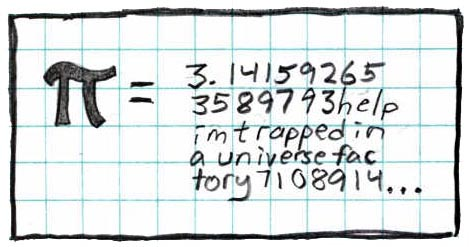

About Me
 Source - xkcd, ofcourse.
 Source - Buttercup Festival by David Troupes.
Source - Buttercup Festival by David Troupes.
"Who reads
Incessantly, and to his reading brings not
A spirit and judgment equal or superior
Uncertain and unsettled still remains,
Deep versed in books, and shallow in himself."
"Mankind, instead of being the central figure on the stage of reality, the rational creature for whom the non-rational world exists, is actually an accident, a late and adventitious newcomer whose life is governed by contingency; and the proof, paradoxically, comes from rationalism itself, from the Darwinian idea of evolution. Whatever may be the case with trees and stones and stars, man the thinker is a by-product, a nonessential component of reality, and he and all his works cling to existence with a hold that is tenuous and feeble." — Nausea, Jean-Paul Sartre.
"My mind rebels at stagnation. Give me problems, give me work, give me the most abstruse cryptogram, or the most intricate analysis, and I am in my own proper atmosphere. I can dispense with artificial stimulants. But I abhor the dull routine of existence." - Sherlock Holmes, A.C. Doyle.
"So please, oh please, we beg, we pray, Go throw your TV set away, And in its place you can install A lovely bookshelf on the wall." - Mike Teavee's Poem (from Charlie and the Chocolate Factory), Roald Dahl
Arpita Sam.